PANDUAN PENGGUNA SISTEM INFORMASI MANAJEMEN KLINIK
PT. IWIND CORPORATION
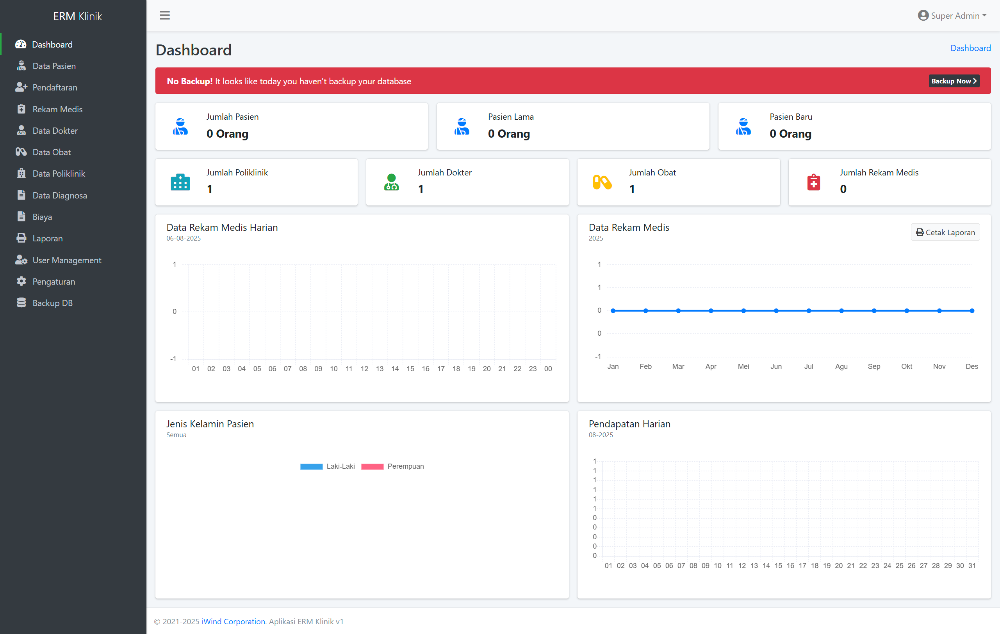
1. Pendahuluan
Sistem Informasi Manajemen Klinik (SIM Klinik) adalah aplikasi berbasis web yang dirancang untuk memudahkan proses administrasi dan manajemen di klinik kesehatan. Sistem ini mencakup berbagai fitur seperti pendaftaran pasien, rekam medis, manajemen dokter, manajemen obat, manajemen biaya, dan pembuatan laporan.
Panduan ini akan membantu Anda memahami cara menggunakan setiap fitur yang tersedia dalam SIM Klinik dengan efektif dan efisien.
1.1 Persyaratan Sistem
Untuk menggunakan SIM Klinik, Anda memerlukan:
- Komputer atau perangkat dengan koneksi internet
- Browser web modern (Google Chrome, Mozilla Firefox, Microsoft Edge, atau Safari versi terbaru)
- Akun pengguna yang telah terdaftar dalam sistem
1.2 Konvensi dalam Dokumen
Dalam panduan ini, kami menggunakan konvensi berikut:
- Cetak tebal: Untuk menu, tombol, dan elemen antarmuka lainnya
- Cetak miring: Untuk istilah penting atau kata kunci
- Teks kode: Untuk URL atau input khusus
2. Memulai Aplikasi
2.1 Login ke Sistem
- Buka browser web Anda dan akses alamat SIM Klinik (misalnya: http://demo-klinik.iwindcorporation.com)
- Masukkan username dan password yang telah diberikan oleh administrator
- Klik tombol Login
2.2 Mengubah Password
- Setelah login, klik nama pengguna Anda di pojok kanan atas
- Pilih Ubah Password
- Masukkan password lama dan password baru
- Klik Simpan untuk menyimpan perubahan
3. Dashboard
Gambar 3.1 - Tampilan Dashboard SIM Klinik
Dashboard SIM Klinik menampilkan ringkasan informasi penting tentang operasional klinik, seperti:
- Menu Navigasi - Terletak di sebelah kiri layar, berisi akses ke seluruh modul sistem
- Statistik Harian - Menampilkan jumlah kunjungan pasien hari ini
- Grafik Kunjungan - Menampilkan tren kunjungan pasien dalam periode tertentu
- Informasi Dokter Bertugas - Menampilkan dokter yang sedang bertugas hari ini
- Notifikasi - Pemberitahuan tentang aktivitas penting dalam sistem
3.1 Navigasi Sistem
Untuk mengakses fitur-fitur dalam SIM Klinik, gunakan menu navigasi di sebelah kiri layar. Menu ini berisi:
- Dashboard
- Pasien
- Pendaftaran
- Rekam Medis
- Dokter
- Obat
- Poliklinik
- Diagnosa
- Biaya
- Laporan
- User
- Backup
4. Manajemen Pasien
4.1 Melihat Daftar Pasien
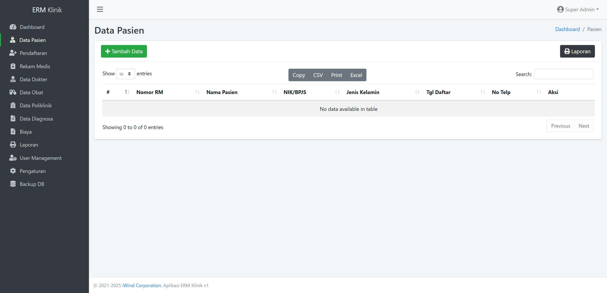
Gambar 4.1 - Tampilan Daftar Pasien
Halaman Daftar Pasien menampilkan semua pasien yang terdaftar di klinik. Fitur pada halaman ini meliputi:
- Pencarian - Mencari pasien berdasarkan nama, nomor rekam medis, atau informasi lainnya
- Pengurutan - Mengurutkan daftar berdasarkan nama, tanggal pendaftaran, dll.
- Filter - Menyaring pasien berdasarkan kriteria tertentu
- Tombol Tambah Pasien - Untuk mendaftarkan pasien baru
- Tombol Aksi - Untuk melihat detail, mengedit, atau menghapus data pasien
4.2 Menambahkan Pasien Baru
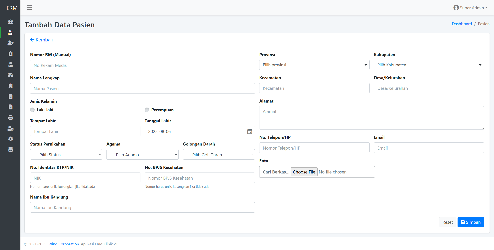
Gambar 4.2 - Form Tambah Pasien Baru
Untuk menambahkan pasien baru:
- Klik tombol Tambah Pasien pada halaman Daftar Pasien
- Isi formulir dengan data pasien:
- Nomor Rekam Medis (otomatis terisi)
- Nama Lengkap
- Jenis Kelamin
- Tanggal Lahir
- Alamat
- Nomor Telepon
- Informasi tambahan lainnya
- Klik tombol Simpan untuk mendaftarkan pasien baru
4.3 Mengedit Data Pasien
Untuk mengedit data pasien:
- Temukan pasien yang ingin diubah datanya di Daftar Pasien
- Klik tombol Edit (ikon pensil) pada kolom Aksi
- Ubah informasi yang diperlukan pada formulir Edit Pasien
- Klik Simpan untuk menyimpan perubahan
4.4 Menghapus Data Pasien
Untuk menghapus data pasien:
- Temukan pasien yang ingin dihapus di Daftar Pasien
- Klik tombol Hapus (ikon tempat sampah) pada kolom Aksi
- Konfirmasi penghapusan pada dialog yang muncul
- Klik OK untuk menghapus data pasien
5. Pendaftaran Pasien
5.1 Melihat Daftar Pendaftaran
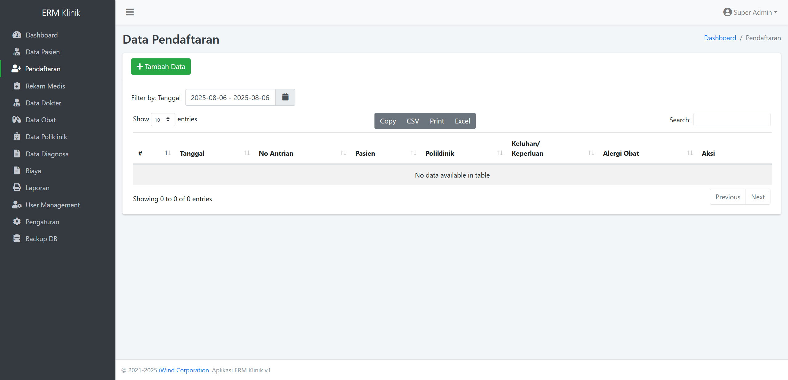
Gambar 5.1 - Tampilan Daftar Pendaftaran
Halaman Pendaftaran menampilkan daftar pasien yang mendaftar untuk kunjungan medis. Fitur pada halaman ini meliputi:
- Filter Tanggal - Untuk melihat pendaftaran pada tanggal tertentu
- Pencarian - Mencari pendaftaran berdasarkan nama pasien atau informasi lainnya
- Status Pendaftaran - Menampilkan status dari setiap pendaftaran (menunggu, sedang diperiksa, selesai)
- Tombol Tambah Pendaftaran - Untuk mendaftarkan kunjungan baru
5.2 Menambahkan Pendaftaran Baru
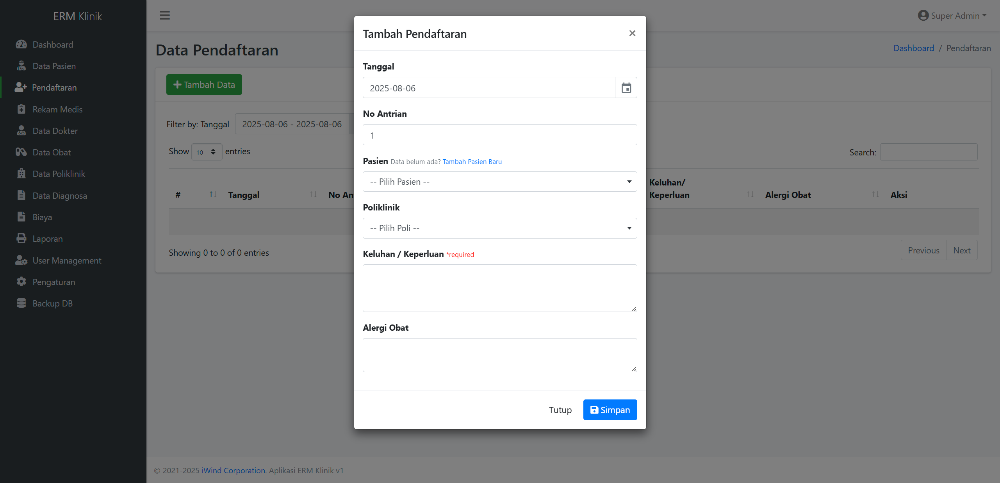
Gambar 5.2 - Form Tambah Pendaftaran
Untuk mendaftarkan kunjungan pasien:
- Klik tombol Tambah Pendaftaran pada halaman Daftar Pendaftaran
- Pilih pasien dari daftar yang ada atau klik Pasien Baru jika pasien belum terdaftar
- Pilih poliklinik tujuan
- Pilih dokter yang akan memeriksa
- Masukkan keluhan utama pasien
- Pilih jenis kunjungan (umum, BPJS, asuransi, dll.)
- Klik Simpan untuk menyelesaikan pendaftaran
5.3 Mengubah Status Pendaftaran
Untuk mengubah status pendaftaran:
- Temukan pendaftaran yang ingin diubah statusnya di Daftar Pendaftaran
- Klik tombol Ubah Status pada kolom Aksi
- Pilih status baru (menunggu, sedang diperiksa, selesai)
- Klik Simpan untuk menyimpan perubahan
6. Rekam Medis
6.1 Melihat Daftar Rekam Medis
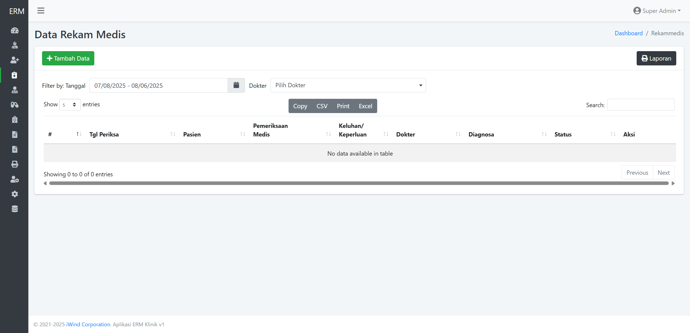
Gambar 6.1 - Tampilan Daftar Rekam Medis
Halaman Rekam Medis menampilkan catatan medis pasien. Fitur pada halaman ini meliputi:
- Pencarian - Mencari rekam medis berdasarkan nama pasien atau nomor rekam medis
- Filter Tanggal - Melihat rekam medis pada periode tertentu
- Tombol Tambah Rekam Medis - Untuk membuat catatan rekam medis baru
- Tombol Aksi - Untuk melihat detail, mengedit, atau mencetak rekam medis
6.2 Membuat Rekam Medis Baru
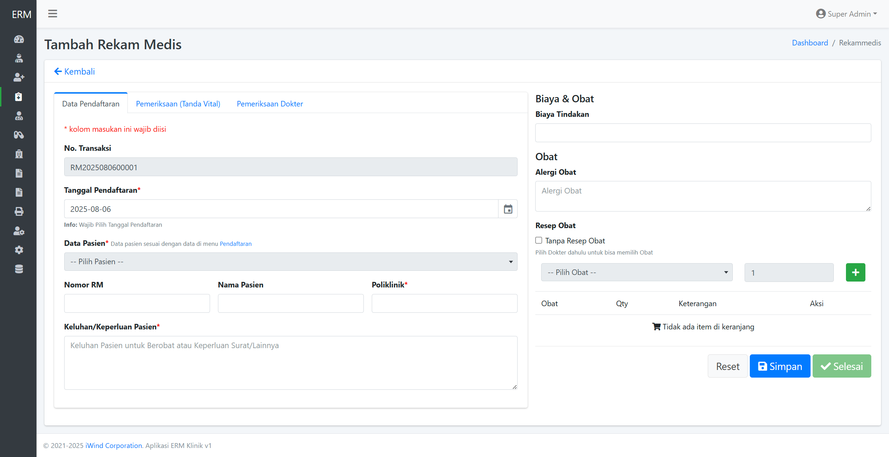
Gambar 6.2 - Form Tambah Rekam Medis (Langkah 1)
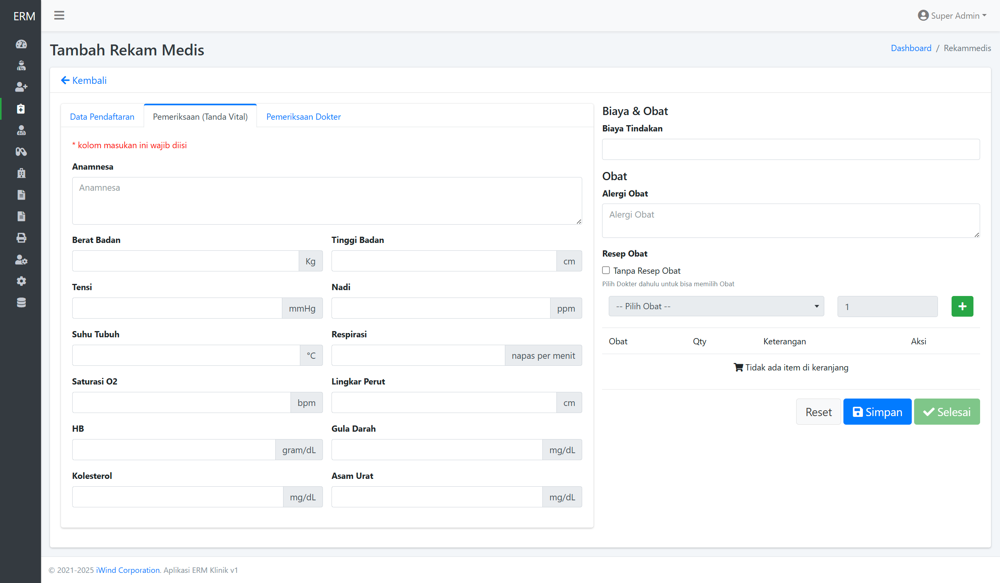
Gambar 6.3 - Form Tambah Rekam Medis (Langkah 2)
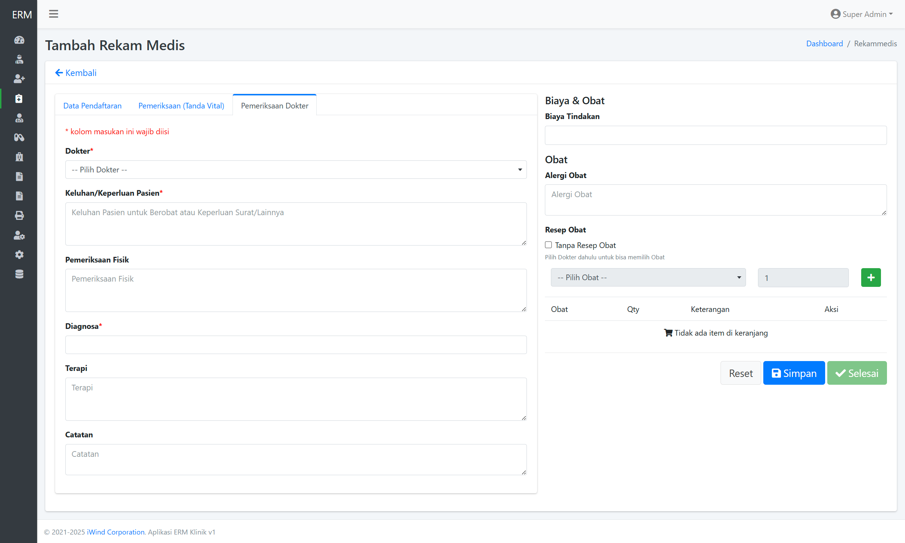
Gambar 6.4 - Form Tambah Rekam Medis (Langkah 3)
Untuk membuat rekam medis baru:
- Klik tombol Tambah Rekam Medis pada halaman Daftar Rekam Medis
- Pilih pasien dari daftar pendaftaran atau cari pasien
- Isi formulir dengan informasi medis:
- Anamnesis (keluhan utama dan riwayat penyakit)
- Pemeriksaan fisik (tekanan darah, suhu, dll.)
- Diagnosa (dapat memilih dari daftar ICD-10)
- Tindakan medis yang dilakukan
- Obat yang diresepkan
- Klik Lanjutkan untuk melanjutkan ke halaman berikutnya
- Pilih obat yang diresepkan dan masukkan dosisnya
- Klik Lanjutkan untuk melanjutkan ke halaman berikutnya
- Verifikasi seluruh data rekam medis
- Klik Simpan untuk menyimpan rekam medis
6.3 Melihat Riwayat Rekam Medis Pasien
Untuk melihat riwayat rekam medis pasien:
- Temukan pasien di Daftar Pasien
- Klik tombol Lihat Rekam Medis pada kolom Aksi
- Sistem akan menampilkan daftar kunjungan medis pasien tersebut
- Klik pada kunjungan tertentu untuk melihat detail rekam medis
6.4 Mencetak Rekam Medis
Untuk mencetak rekam medis:
- Temukan rekam medis yang ingin dicetak di Daftar Rekam Medis
- Klik tombol Cetak pada kolom Aksi
- Sistem akan menampilkan pratinjau dokumen rekam medis
- Klik Print untuk mencetak dokumen
7. Manajemen Dokter
7.1 Melihat Daftar Dokter
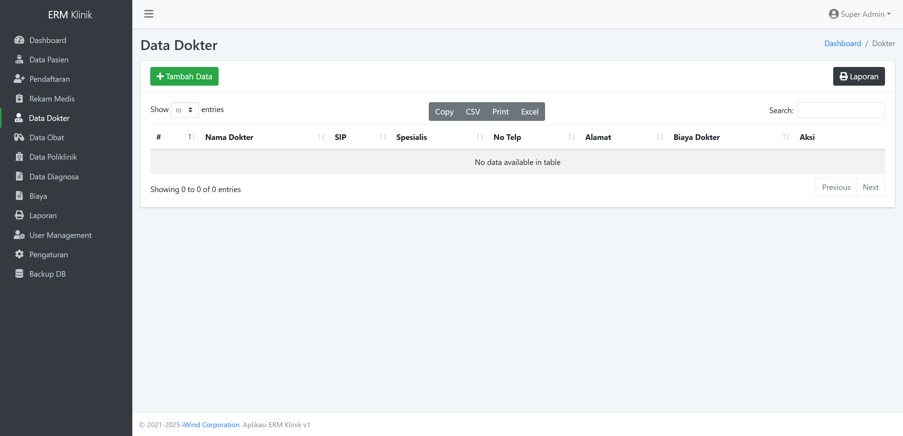
Gambar 7.1 - Tampilan Daftar Dokter
Halaman Dokter menampilkan daftar dokter yang praktik di klinik. Fitur pada halaman ini meliputi:
- Pencarian - Mencari dokter berdasarkan nama atau spesialisasi
- Pengurutan - Mengurutkan daftar berdasarkan nama atau spesialisasi
- Tombol Tambah Dokter - Untuk menambahkan dokter baru
- Tombol Aksi - Untuk melihat detail, mengedit, atau menghapus data dokter
7.2 Menambahkan Dokter Baru
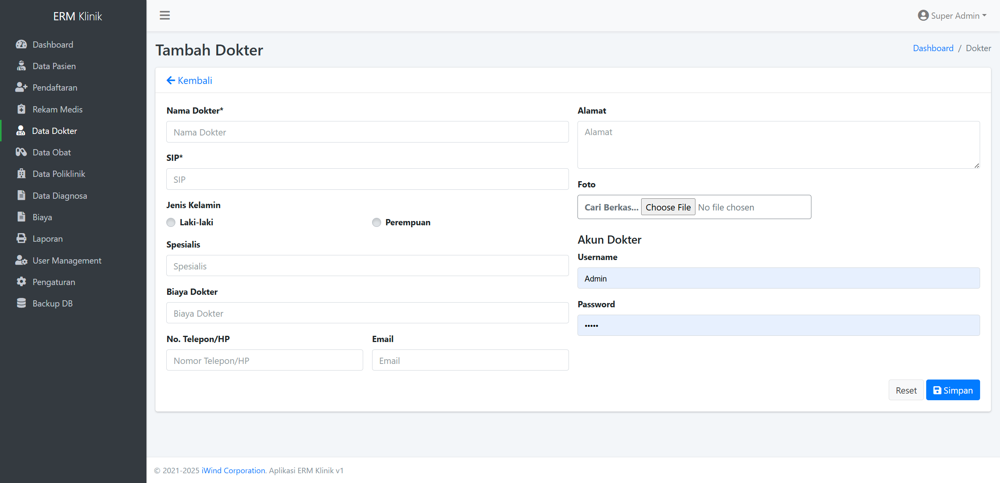
Gambar 7.2 - Form Tambah Dokter
Untuk menambahkan dokter baru:
- Klik tombol Tambah Dokter pada halaman Daftar Dokter
- Isi formulir dengan data dokter:
- Nama Lengkap
- Spesialisasi
- Nomor SIP (Surat Izin Praktik)
- Nomor Telepon
- Email
- Jadwal Praktik
- Informasi tambahan lainnya
- Klik Simpan untuk menambahkan dokter baru
7.3 Mengedit Data Dokter
Untuk mengedit data dokter:
- Temukan dokter yang ingin diubah datanya di Daftar Dokter
- Klik tombol Edit (ikon pensil) pada kolom Aksi
- Ubah informasi yang diperlukan pada formulir Edit Dokter
- Klik Simpan untuk menyimpan perubahan
7.4 Menghapus Data Dokter
Untuk menghapus data dokter:
- Temukan dokter yang ingin dihapus di Daftar Dokter
- Klik tombol Hapus (ikon tempat sampah) pada kolom Aksi
- Konfirmasi penghapusan pada dialog yang muncul
- Klik OK untuk menghapus data dokter
8. Manajemen Obat
8.1 Melihat Daftar Obat
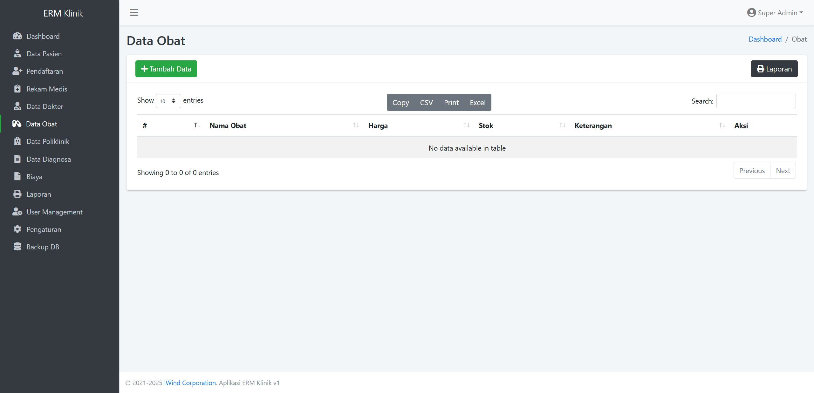
Gambar 8.1 - Tampilan Daftar Obat
Halaman Obat menampilkan daftar obat yang tersedia di klinik. Fitur pada halaman ini meliputi:
- Pencarian - Mencari obat berdasarkan nama atau jenis
- Filter - Menyaring obat berdasarkan kategori atau ketersediaan
- Tombol Tambah Obat - Untuk menambahkan obat baru
- Informasi Stok - Menampilkan jumlah stok yang tersedia
- Tombol Aksi - Untuk melihat detail, mengedit, atau menghapus data obat
8.2 Menambahkan Obat Baru
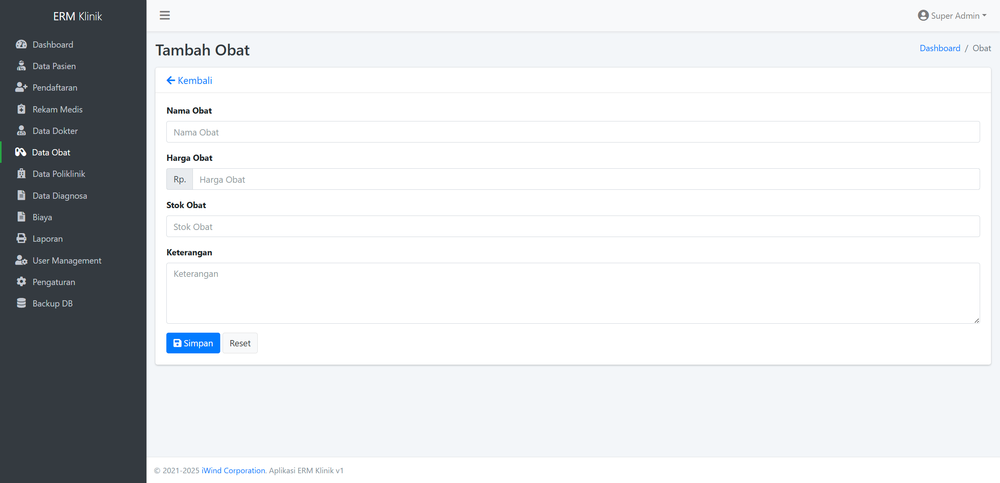
Gambar 8.2 - Form Tambah Obat
Untuk menambahkan obat baru:
- Klik tombol Tambah Obat pada halaman Daftar Obat
- Isi formulir dengan data obat:
- Nama Obat
- Jenis/Kategori Obat
- Satuan (tablet, botol, ampul, dll.)
- Jumlah Stok
- Harga
- Tanggal Kadaluarsa
- Informasi tambahan lainnya
- Klik Simpan untuk menambahkan obat baru
8.3 Mengedit Data Obat
Untuk mengedit data obat:
- Temukan obat yang ingin diubah datanya di Daftar Obat
- Klik tombol Edit (ikon pensil) pada kolom Aksi
- Ubah informasi yang diperlukan pada formulir Edit Obat
- Klik Simpan untuk menyimpan perubahan
8.4 Menghapus Data Obat
Untuk menghapus data obat:
- Temukan obat yang ingin dihapus di Daftar Obat
- Klik tombol Hapus (ikon tempat sampah) pada kolom Aksi
- Konfirmasi penghapusan pada dialog yang muncul
- Klik OK untuk menghapus data obat
8.5 Manajemen Stok Obat
Untuk mengelola stok obat:
- Temukan obat yang ingin dikelola stoknya di Daftar Obat
- Klik tombol Kelola Stok pada kolom Aksi
- Pilih jenis transaksi (masuk atau keluar)
- Masukkan jumlah dan keterangan
- Klik Simpan untuk mencatat transaksi stok
9. Manajemen Poliklinik
9.1 Melihat Daftar Poliklinik
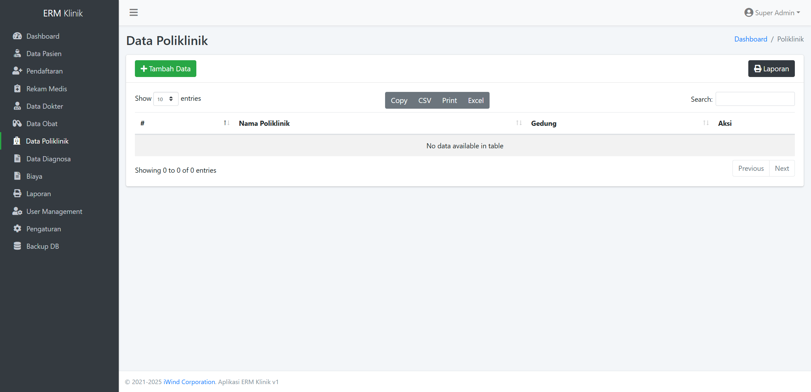
Gambar 9.1 - Tampilan Daftar Poliklinik
Halaman Poliklinik menampilkan daftar poliklinik yang tersedia di klinik. Fitur pada halaman ini meliputi:
- Pencarian - Mencari poliklinik berdasarkan nama
- Tombol Tambah Poliklinik - Untuk menambahkan poliklinik baru
- Tombol Aksi - Untuk melihat detail, mengedit, atau menghapus data poliklinik
9.2 Menambahkan Poliklinik Baru
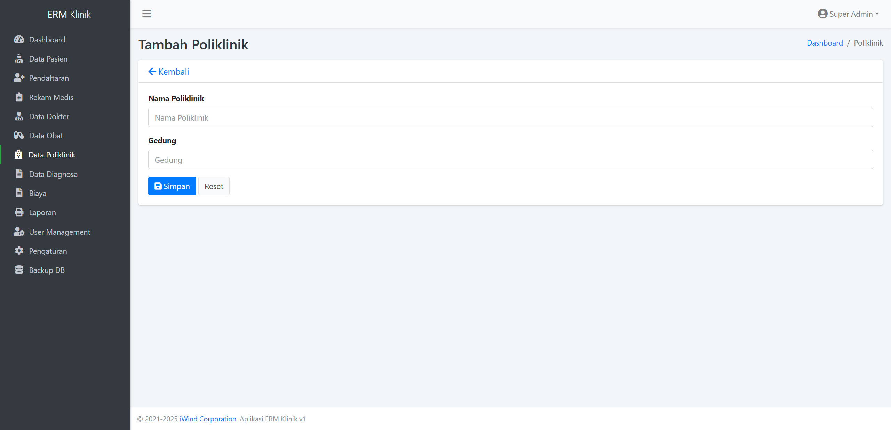
Gambar 9.2 - Form Tambah Poliklinik
Untuk menambahkan poliklinik baru:
- Klik tombol Tambah Poliklinik pada halaman Daftar Poliklinik
- Isi formulir dengan data poliklinik:
- Nama Poliklinik
- Deskripsi
- Jam Operasional
- Informasi tambahan lainnya
- Klik Simpan untuk menambahkan poliklinik baru
9.3 Mengedit Data Poliklinik
Untuk mengedit data poliklinik:
- Temukan poliklinik yang ingin diubah datanya di Daftar Poliklinik
- Klik tombol Edit (ikon pensil) pada kolom Aksi
- Ubah informasi yang diperlukan pada formulir Edit Poliklinik
- Klik Simpan untuk menyimpan perubahan
9.4 Menghapus Data Poliklinik
Untuk menghapus data poliklinik:
- Temukan poliklinik yang ingin dihapus di Daftar Poliklinik
- Klik tombol Hapus (ikon tempat sampah) pada kolom Aksi
- Konfirmasi penghapusan pada dialog yang muncul
- Klik OK untuk menghapus data poliklinik
10. Diagnosa
10.1 Melihat Daftar Diagnosa
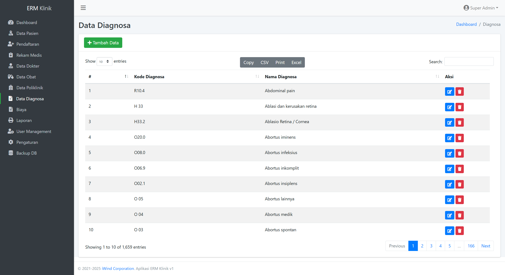
Gambar 10.1 - Tampilan Daftar Diagnosa
Halaman Diagnosa menampilkan daftar kode ICD-10 dan diagnosa yang tersedia. Fitur pada halaman ini meliputi:
- Pencarian - Mencari diagnosa berdasarkan kode atau nama
- Filter - Menyaring diagnosa berdasarkan kategori
- Tombol Tambah Diagnosa - Untuk menambahkan diagnosa baru
- Tombol Aksi - Untuk melihat detail, mengedit, atau menghapus data diagnosa
10.2 Menambahkan Diagnosa Baru
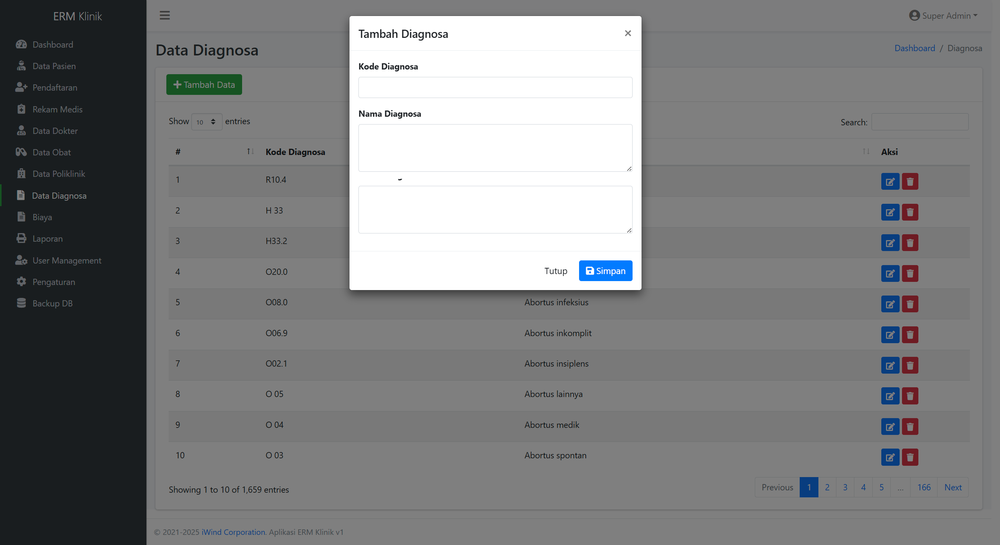
Gambar 10.2 - Form Tambah Diagnosa
Untuk menambahkan diagnosa baru:
- Klik tombol Tambah Diagnosa pada halaman Daftar Diagnosa
- Isi formulir dengan data diagnosa:
- Kode ICD-10
- Nama Diagnosa
- Deskripsi
- Kategori
- Klik Simpan untuk menambahkan diagnosa baru
10.3 Mengedit Data Diagnosa
Untuk mengedit data diagnosa:
- Temukan diagnosa yang ingin diubah datanya di Daftar Diagnosa
- Klik tombol Edit (ikon pensil) pada kolom Aksi
- Ubah informasi yang diperlukan pada formulir Edit Diagnosa
- Klik Simpan untuk menyimpan perubahan
10.4 Menghapus Data Diagnosa
Untuk menghapus data diagnosa:
- Temukan diagnosa yang ingin dihapus di Daftar Diagnosa
- Klik tombol Hapus (ikon tempat sampah) pada kolom Aksi
- Konfirmasi penghapusan pada dialog yang muncul
- Klik OK untuk menghapus data diagnosa
11. Manajemen Biaya
11.1 Melihat Daftar Biaya
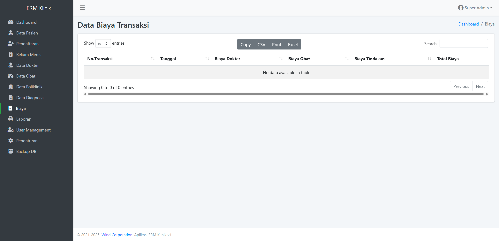
Gambar 11.1 - Tampilan Daftar Biaya
Halaman Biaya menampilkan daftar transaksi keuangan di klinik. Fitur pada halaman ini meliputi:
- Filter Tanggal - Untuk melihat transaksi pada periode tertentu
- Pencarian - Mencari transaksi berdasarkan nama pasien atau jenis transaksi
- Tombol Tambah Transaksi - Untuk menambahkan transaksi baru
- Tombol Aksi - Untuk melihat detail, mengedit, atau mencetak kuitansi
11.2 Menambahkan Transaksi Baru
Untuk menambahkan transaksi baru:
- Klik tombol Tambah Transaksi pada halaman Daftar Biaya
- Pilih jenis transaksi (pembayaran layanan medis, pembelian obat, dll.)
- Pilih pasien terkait (jika ada)
- Masukkan rincian biaya:
- Jenis layanan/item
- Jumlah
- Harga satuan
- Diskon (jika ada)
- Pilih metode pembayaran
- Klik Simpan untuk mencatat transaksi
11.3 Mencetak Kuitansi
Untuk mencetak kuitansi pembayaran:
- Temukan transaksi yang ingin dicetak kuitansinya di Daftar Biaya
- Klik tombol Cetak Kuitansi pada kolom Aksi
- Sistem akan menampilkan pratinjau kuitansi
- Klik Print untuk mencetak kuitansi
12. Laporan
12.1 Mengakses Laporan
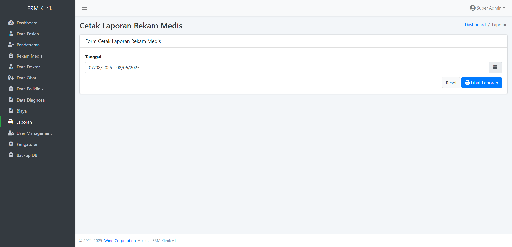
Gambar 12.1 - Tampilan Halaman Laporan
Halaman Laporan memungkinkan Anda untuk menghasilkan berbagai jenis laporan. Fitur pada halaman ini meliputi:
- Jenis Laporan - Pilihan berbagai jenis laporan yang tersedia
- Filter Periode - Untuk menghasilkan laporan dalam periode tertentu
- Format Output - Pilihan format laporan (PDF, Excel, dll.)
- Tombol Generate - Untuk menghasilkan laporan
12.2 Jenis-jenis Laporan
SIM Klinik menyediakan berbagai jenis laporan, antara lain:
- Laporan Kunjungan Pasien - Data kunjungan pasien dalam periode tertentu
- Laporan Keuangan - Ringkasan pendapatan dan pengeluaran
- Laporan Stok Obat - Status stok obat dan pergerakan stok
- Laporan Kinerja Dokter - Jumlah pasien yang ditangani oleh setiap dokter
- Laporan Diagnosa - Frekuensi diagnosa dalam periode tertentu
- Laporan Demografi Pasien - Distribusi pasien berdasarkan usia, jenis kelamin, dll.
12.3 Menghasilkan dan Mencetak Laporan
Untuk menghasilkan dan mencetak laporan:
- Pilih jenis laporan yang diinginkan
- Tentukan periode laporan (tanggal mulai dan tanggal selesai)
- Pilih filter tambahan jika diperlukan
- Pilih format output (PDF, Excel, dll.)
- Klik Generate untuk menghasilkan laporan
- Setelah laporan ditampilkan, klik Print atau Download untuk mencetak atau menyimpan laporan
13. Manajemen Pengguna
13.1 Melihat Daftar Pengguna
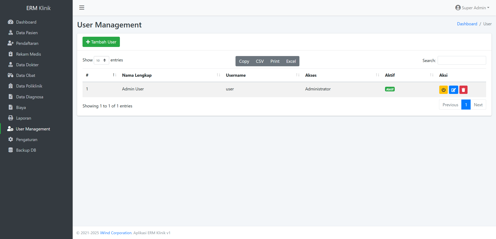
Gambar 13.1 - Tampilan Daftar Pengguna
Halaman User menampilkan daftar pengguna sistem. Fitur pada halaman ini meliputi:
- Pencarian - Mencari pengguna berdasarkan nama atau peran
- Tombol Tambah User - Untuk menambahkan pengguna baru
- Tombol Aksi - Untuk melihat detail, mengedit, atau menonaktifkan pengguna
13.2 Menambahkan Pengguna Baru
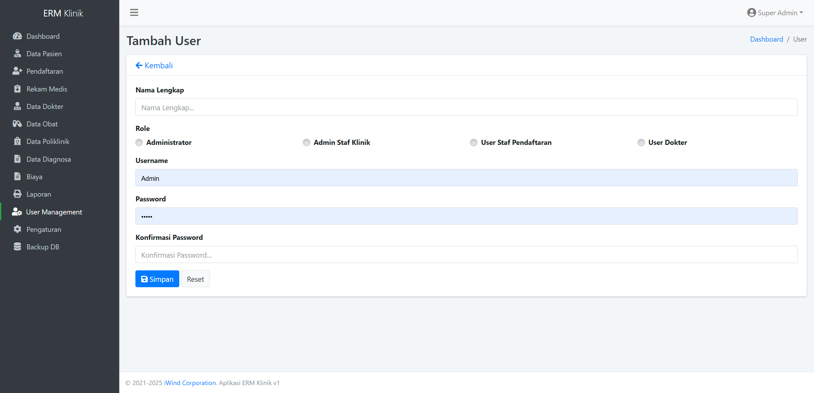
Gambar 13.2 - Form Tambah Pengguna
Untuk menambahkan pengguna baru:
- Klik tombol Tambah User pada halaman Daftar Pengguna
- Isi formulir dengan data pengguna:
- Nama Lengkap
- Username
- Password
- Email
- Nomor Telepon
- Peran/Level Akses (Admin, Dokter, Perawat, Apoteker, Kasir, dll.)
- Status (Aktif/Tidak Aktif)
- Klik Simpan untuk menambahkan pengguna baru
13.3 Mengedit Data Pengguna
Untuk mengedit data pengguna:
- Temukan pengguna yang ingin diubah datanya di Daftar Pengguna
- Klik tombol Edit (ikon pensil) pada kolom Aksi
- Ubah informasi yang diperlukan pada formulir Edit User
- Klik Simpan untuk menyimpan perubahan
13.4 Menonaktifkan Pengguna
Untuk menonaktifkan pengguna:
- Temukan pengguna yang ingin dinonaktifkan di Daftar Pengguna
- Klik tombol Edit pada kolom Aksi
- Ubah Status menjadi "Tidak Aktif"
- Klik Simpan untuk menyimpan perubahan
13.5 Reset Password Pengguna
Untuk mereset password pengguna:
- Temukan pengguna yang passwordnya ingin direset di Daftar Pengguna
- Klik tombol Reset Password pada kolom Aksi
- Konfirmasi reset password pada dialog yang muncul
- Password akan direset ke nilai default dan pengguna akan diminta untuk mengubahnya saat login berikutnya
14. Backup Data
14.1 Backup Database
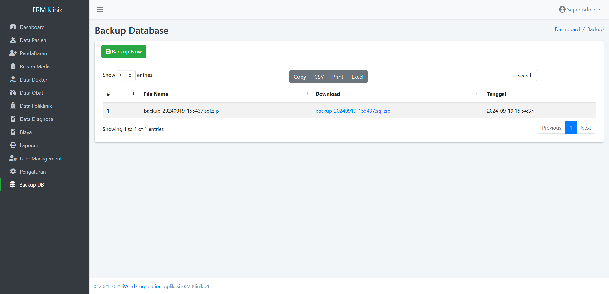
Gambar 14.1 - Tampilan Halaman Backup Data
Halaman Backup memungkinkan Anda untuk membuat cadangan data sistem. Fitur pada halaman ini meliputi:
- Backup Manual - Untuk melakukan backup data secara manual
- Jadwal Backup Otomatis - Untuk mengatur jadwal backup otomatis
- Riwayat Backup - Daftar backup yang telah dilakukan sebelumnya
- Opsi Restore - Untuk mengembalikan data dari file backup
14.2 Melakukan Backup Manual
Untuk melakukan backup manual:
- Klik tombol Backup Sekarang pada halaman Backup
- Pilih komponen yang ingin di-backup (seluruh database atau tabel tertentu)
- Pilih lokasi penyimpanan file backup
- Klik Mulai Backup untuk memulai proses backup
- Setelah selesai, sistem akan memberikan notifikasi dan link untuk mengunduh file backup
14.3 Mengatur Jadwal Backup Otomatis
Untuk mengatur jadwal backup otomatis:
- Klik tab Jadwal Backup pada halaman Backup
- Tentukan frekuensi backup (harian, mingguan, bulanan)
- Pilih waktu pelaksanaan backup
- Tentukan lokasi penyimpanan file backup
- Klik Simpan untuk mengaktifkan jadwal backup otomatis
14.4 Restore Data dari Backup
Untuk mengembalikan data dari file backup:
- Klik tab Restore pada halaman Backup
- Pilih file backup yang ingin digunakan
- Konfirmasi proses restore pada dialog yang muncul
- Klik Mulai Restore untuk memulai proses restore
- Tunggu hingga proses selesai dan sistem akan restart secara otomatis
Kontak Dukungan
Jika Anda mengalami masalah atau memiliki pertanyaan tentang penggunaan SIM Klinik, silakan hubungi tim dukungan teknis kami:
- Email: support@iwindcorporation.com
- Telepon: (021) 1234-5678
- Waktu layanan: Senin-Jumat, 08.00-17.00 WIB